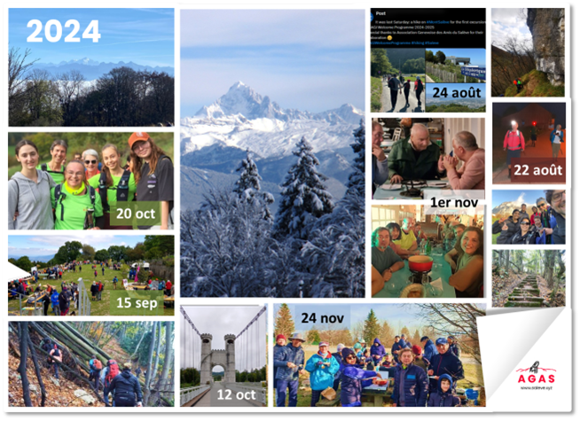

Association Genevoise des Amis du Salève
Rapport annuel 2024

Bienvenue
« Tous les dimanches, les amoureux de randonnées pédestres se donnent rendez-vous à Veyrier-Douane. Il n y a pas d'inscription préalable. » Depuis près de 30 ans, cette invitation est ouverte à tout un chacun qui a envie de monter au Salève avec nous. C'est une formule assez unique et très réussie. En mars 2024, le président-fondateur de l'Association genevoise des amis du Salève, David Viry, a passé le flambeau à une nouvelle équipe. Nous vous présentons ici notre premier rapport annuel.
Monika Zweygarth (présidente)
Daniel Pfund (vice-président)
Randonnées
Le rendez-vous fixe à Veyrier-Douane a été maintenu chaque dimanche de l'année (52 dimanches), avec un rendez-vous aussi à Croix-de-Rozon le dimanche 29 septembre. Trois randonnées additionnelles ont eu lieu d'autres jours de la semaine (voir ci-dessous). Les randos ont été animées par Cathy, Maryse, Philippe, Rodolphe, Gérard, Daniel et Monika, avec l'aide occasionnelle de Marc, Maguy et d'autres habitués. Nous les remercions ici pour leur engagement.
En moyenne, 14 personnes sont venues aux rendez-vous (minimum 3, maximum 28). Au total il y a eu 769 présences notées, dont 210 étaient des premières randonnées avec l'AGAS et 10 étaient des enfants âgées entre 7 et 14 ans. Reconduisant les chiffres des rapports annuels précédents, depuis mai 1996 et jusqu'à fin 2024, il y a eu 29'284 participants (en comptant chaque randonnée de chaque personne), et 8'158 personnes différentes sont venues marcher avec l'AGAS.
Selon la cotation du Club Alpin Suisse nos randonnées sont du niveau T2 (« randonnée en montagne »), avec 850 mètres de dénivelé environ pour la montée et une distance de 7 à 25 kilomètres selon l'itinéraire. Parfois nous formons plusieurs groupes avec des itinéraires différents. La plupart des marcheurs descend aussi à pied.
Nous avons arpenté le Salève dans tous les sens. Un plan et un tableau des chemins par fréquence de nos passages se trouvent à la fin de ce rapport. Peu surprenant, le plus souvent nous sommes passés par le chemin du Pas de l'Echelle, la crête et le chemin du Facteur.
Quelques randonnées mémorables:
- Dimanche 21 juillet : Fête de la Thuile, par météo orageuse -- la fête s'est tenue à l'intérieur.
- Dimanche 15 septembre : Participation à la 30e Fête du Salève au téléphérique ; nous avons été un des six groupes accompagnés figurant au programme.
- Dimanche 20 octobre : «Journée des jeunes » : la nouvelle génération à l'honneur
- Dimanche 27 novembre : Anniversaire de Rodolphe, aux tables de pique-nique à l'Observatoire, avec fondue, gâteau et musique. Un grand merci est dû ici à Rodolphe, qui nous quitte après de nombreuses années d'engagement pour l'AGAS afin de retourner en Vendée.
Randonnées hors dimanches:
- Jeudi 22 août, rando nocturne : Quatre personnes sont montées de Croix-de-Rozon à la Croisette. Coucher du soleil, pique-nique, et descente dans la nuit. Nous avons vu la pleine lune à 23h10, en arrivant en bas.
- Samedi 24 août : Encadrement d'une excursion du Centre d'Accueil de la Genève Internationale (CAGI), originellement prévue en juin mais reportée à cause de la météo.
- Samedi 12 octobre, randonnée des guides : Une reconnaissance a été faite le 18 septembre. En octobre trois courageux y sont allés par un beau temps d'automne (trois autres étaient malades). Ils ont pris le bus tpg 272 jusqu'aux Ponts de La Caille et sont retournés à Genève à pied en longeant les flancs du Salève.
Activités associatives
L'assemblée générale 2024 s'est tenue le 14 mars à l'Espace de quartier Soubeyran, 1203 Genève, en présence de dix membres votants. Le procès-verbal est disponible ici.
Au moment de l'assemblée générale, la liste de contact de l'AGAS comportait 123 adresses mail. Après un nettoyage initial de la liste nous avons contacté 106 personnes au mois d'avril, leur demandant si elles voulaient toujours recevoir nos messages, et les invitant à verser une cotisation de CHF 15 pour l'année. Conformément à la nouvelle loi sur la protection des données, entrée en vigueur le 1er septembre 2023, nous avons effacé les données des personnes qui se sont désabonnées. Au 31 décembre 2024, la liste comportait 102 noms (97 adresses mail), dont 35 membres cotisants. La page « mentions légales » sur le site web de l'AGAS explique comment nous traitons les données.
Un repas de fin d'année pour les membres a eu lieu aux Bains des Pâquis le 1 novembre. Occasion de se retrouver dans un cadre différent, et -- pour certains -- de faire connaissance.
Site web
Nous avons fait un site web plus moderne avec un nouveau nom de domaine (www.saleve.xyz). Nous avons choisi l'extension xyz parce qu'elle était disponible et pas chère. En contrepartie, nous avons malheureusement appris plus tard que cette extension était souvent utilisée pour envoyer des spams; de ce fait nous ne l'utilisons pas pour envoyer des emails (pour recevoir des emails il n'y a pas de problèmes).
Le site web est moderne et réactif, c'est-à-dire qu'il s'adapte suivant l'utilisation sur ordinateur, tablette ou smartphone. Par rapport à l'ancien site de David Viry (www.rando-saleve.net), le nouveau est plus sommaire, tout en proposant les informations nécessaires pour découvrir l'AGAS et venir à nos randonnées. Le but étant qu'il reste simple et rapide à charger.
Techniquement il est basé sur Jekyll, un système de gestion de pages statiques. Le site a été fortement optimisé avec un objectif de téléchargement rapide avec un poids minimal. Il figure d'ailleurs dans la liste des sites mondiaux avec moins de 512 kilobytes de transfert (www.512kb.club).
D'après nos statistiques, les accès par smartphones et tablettes représentent environ 30% et 25% respectivement. Il y a une proportion importante d'utilisateurs anglophones (environ un tiers), mais le français reste majoritaire. La grande majorité des utilisateurs se trouvent en Suisse (80%) et en France (10%).
Promotion
Etant donné que nos randos sont gratuites il faut une motivation additionnelle pour encourager les marcheurs à adhérer à l'association. En 2024 nous avons offert un t‑shirt ou polo vert avec le logo de l'AGAS à chaque membre, les non-membres ont pu l'acheter au prix de 15 CHF.

Pour 2025 nous avons commandé des bonnets noirs avec le logo de l'AGAS.

Nous sommes maintenant bien visibles sur les chemins du Salève.
Promotion (suite)
Nous avons produit de nouveaux flyers que nous avons distribués à l'Office de Tourisme de Genève, à l'Espace de la Ville de Genève, à la mairie de Veyrier, à l'Auberge de Jeunesse de Genève, au téléphérique et au bureau du Syndicat Mixte du Salève.


Le flyer a été reproduit dans le journal de la commune « Vivez Veyrier » , édition distribuée le 28 octobre 2024. Une affiche du même style se trouve au point de rendez-vous à Veyrier-Douane, et une autre à la mairie de Veyrier.

Nous avons aussi fait des cartes de visite que nous donnons à ceux qui s'intéressent à nos randonnées.


Administration
Suite à l'assemblée générale nous sommes repartis à zéro. Nous avons ouvert un compte à la Banque Migros et créé un simple système de comptabilité sur des feuilles de calcul en ligne. Nous avons activé l'accès au portail électronique des démarches de la Ville de Genève, mis à jour les détails de l'association dans le répertoire des entreprises du canton de Genève (REG), et soumis une demande de subvention au Service des sports de la Ville de Genève ; ce soutien nous a été accordée. Nous avons créé un compte e-démarches pour l'envoi de la déclaration fiscale de l'AGAS pour 2023. Selon les bordereaux notifiés le 1 juillet, la situation fiscale de l'association est en règle, aucun impôt n'est dû.
Deux personnes ont accès au compte bancaire et aux portails e-démarches susmentionnés, et nous maintenons une collection partagée de documents-clés en ligne (liste des randonnées, liste des membres, et autres fichiers relatives aux activités décrites dans ce rapport).
Finances
Les finances de l'AGAS sont saines. Nos frais sont modestes car les guides et le comité s'engagent à titre bénévole. Grâce à la subvention du Service des sports de la Ville de Genève nous avons pu renforcer nos activités de promotion et de fidélisation des membres. Nous remercions la Ville de Genève pour son soutien. Le rapport financier est disponible séparément.
Perspectives
Le rendez-vous fixe de l'AGAS est accessible à tous en transports en commun. Nos randonnées attirent un public varié, leur offrant une activité à la fois sportive et sociale. Nous allons faire au mieux pour maintenir l'association qui est à la base de cette belle tradition.
Annexe :
Chemins parcourus
Numérotés de 1 à 17, par fréquence
Remarques :
- Plusieurs chemins sont enchaînés pour un itinéraire (montée, traversée, descente).
- Plusieurs itinéraires peuvent être proposés le même jour.
- Les chemins en pointillé sur le plan ci-dessous sont sur l'autre versant du Salève.

Fréquence (Nombre de fois pris) |
Nombre de marcheurs (comptant chaque passage d'un marcheur à chaque fois) |
||||||
|---|---|---|---|---|---|---|---|
| # | Chemin | Montée ▲ | Descente ▼ | Total | Montée ▲ | Descente ▼ | Total |
| 1 | Pas de l'Echelle | 45 | 45 | 90 | 459 | 271 | 731 |
| 2 | Crête | 35 | 208 | Téléphérique | 5 | 35 | 40 | 23 | 162 | 185 |
| 3 | Facteur | 32 | 32 | 180 | 180 | ||
| 4 | Orjobet | 7 | 2 | 9 | 58 | 10 | 68 |
| 5 | Grande Gorge | 7 | 7 | 59 | 59 | ||
| 6 | Vovray-Traversière | 4 | 4 | 8 | 32 | 21 | 53 |
| 7 | Grand Piton-La Thuile | 5 | 49 | ||||
| 8 | Croisette-Grand Piton | 5 | 44 | ||||
| 9 | Tour du Petit Salève | 5 | 40 | ||||
| 10 | Bois-Mouton | 4 | 4 | 34 | 34 | ||
| 11 | Corraterie | 7 | 32 | ||||
| 12 | Chemin du Funiculaire | 3 | 3 | 26 | 26 | ||
| 13 | Allumées | 5 | 5 | 20 | 20 | ||
| 14 | Gr. Gaby-Pile-Croisette | 2 | 13 | ||||
| 15 | Plan-Grand Piton | 2 | 13 | ||||
| 16 | Montée depuis Cruseilles* | 2 | 2 | 13 | 13 | ||
| 17 | Sentier de la Joie | 2 | 9 | ||||
| 18 | Beaumont-La Thuile | 1 | 1 | 8 | 8 | ||
| 19 | Le Coin-Veyrier | 3 | 6 | ||||
| 20 | Châble-Chalet des Convers | 1 | 1 | 6 | 6 | ||
* Dont 8 fois au retour de la montée au Grand Salève